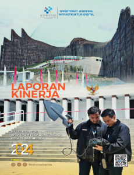
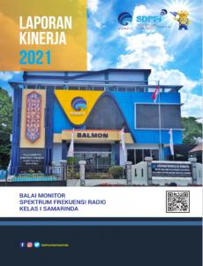
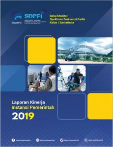

BALMON SAMARINDA
Kementerian Komunikasi & Digital
Mewujudkan frekuensi radio yang tertib, efisien, dan bebas gangguan di Kalimantan Timur. Ajukan perizinan dan pengaduan Anda secara online dengan mudah dan transparan.

Balmon Samarinda memiliki peran strategis dalam melakukan pengawasan, pengendalian, serta penertiban penggunaan spektrum frekuensi radio dan perangkat telekomunikasi di wilayah kerja Kalimantan Timur dan sekitarnya. Kami memastikan spektrum sebagai sumber daya alam terbatas dikelola secara tertib dan efisien.
Mengenal profil dan peran strategis Balmon Samarinda
Layanan perizinan spektrum radio yang transparan
Pusat bantuan mengenai prosedur perizinan dan regulasi
Layanan pengaduan dan komunikasi resmi
Terkait aktivitas Balai Monitoring Spektrum Frekuensi Radio Kelas I Samarinda
Baca SelengkapnyaDokumen akuntabilitas kinerja Balmon Samarinda sebagai wujud transparansi dan komitmen pelayanan publik.



Temukan jawaban atas pertanyaan yang sering diajukan seputar layanan Balmon Samarinda
Pengajuan izin frekuensi radio dilakukan secara online melalui website isr.postel.go.id setelah akun terdaftar.
Ada 2 tahap:
Semua file dalam format PDF.
Status pengajuan akun dapat dicek secara berkala melalui email yang didaftarkan pada sistem.
Ajukan kembali dengan memperhatikan alasan penolakan (kelengkapan dokumen, salah pengisian data).
Lanjutkan dengan login pada website perizinan untuk mengajukan ISR dengan mengisi data teknis dan melengkapi dokumen pengajuan teknis perizinan.
Bisa. Ajukan perubahan data akun/modifikasi data administrasi melalui website perizinan dengan login, kemudian klik profile dan klik ubah data user.
Balai Monitoring Spektrum Frekuensi Radio Kelas I Samarinda